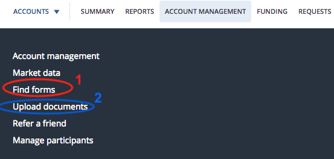

CheckMark Tutoring: How-To Guides for Canadians
CheckMark Tutoring: How-To Guides for Canadians *Note: the information below has been updated for 2018 (last update: March 2018)
Q: What is a RRSP?
RRSP stands for Registered Retirement Savings Plan. 'Registered' refers to the fact that it is registered with the Canadian government and allows Canadian residents some tax advantages (by reducing taxable income) as an incentive to save for their retirement. The amount of money that you can contribute to your RRSP fluctuates based on your income and pension. Your contribution room will be 18% of your previous year's earned income (up to a maximum) minus pension adjustments. So if you contribute to a pension, you will have less contribution room.
Your RRSP is considered to be a 'tax-deferred' account as opposed to being 'tax-free' like your TFSA (Tax-Free Savings Account). The money that you put into a TFSA is 'after-tax' money and you won't be taxed on any profits you make on your investments when you withdraw from a TFSA. The money that you put into a RRSP on the other hand will automatically give you a tax deduction in that amount for the year that you contribute to your RRSP (e.g. if you make $80,000 and you contribute $10,000 into your RRSP, you will only be taxed on $70,000 worth of your income) unless you choose to carry forward the deduction to another year. It could make sense to this if you are being taxed at a low rate right now and if you will be in a higher tax bracket in the years to come (when a tax break will be more useful). If you choose to carry forward the deduction to another year, you will have to make sure to indicate this on your tax returns. Effectively, this means that the money in the RRSP is 'before-tax'. However, when you withdraw money from your RRSP, it will be taxed as income at your marginal tax rate for the year that you make the withdrawal.
Q: Can I withdraw money from my RRSP like I can with a TFSA?
You should do whatever you can to avoid withdrawing from your RRSP before retirement. One reason for this is because a withdrawal from your RRSP means you will lose that contribution room (unless the withdrawal is a part of the Home Buyer's Plan or Lifelong Learning Plan). This is unlike a TFSA in which the amount of a withdrawal will be added to your contribution room for the next year (which also makes it easier to move the money in your TFSA to a different brokerage if you decide to do so).
At 71 years old, you will be required to begin withdrawing money from an RRSP regardless of whether you want to or not. This is unlike the TFSA in which there is never any requirements to withdraw money. Most people transfer investments in-kind (meaning the investments are not sold, but instead transferred) to their RRSP into a RRIF (Registered Retirement Income Fund) at this point. The RRIF is essentially the same as your RRSP except that it has a minimum required withdrawal that is a percentage of the year-end balance of your RRIF. This percentage increases as you age (e.g. 5.28% minimum withdrawal is required when you turn 72 but this percentage increases to 10.99% when you turn 90 years old).
Q: Other than reducing my taxable income (through a tax deduction) and deferring the tax on the RRSP contribution, are there any other benefits of a RRSP?
Income-splitting is another advantage of a RRSP as you can set up a spousal RSP which allows the higher earning spouse to contribute to an RSP that is in their spouse's name.
The Home Buyer's Plan and Lifelong Learning Plan could be useful to some people (although I would try to avoid it since it is not benefical for your retirement savings).
You can also 'gift' money to a spouse that she/he could then use for their own TFSA.
Q: Should the investments that I hold in a RRSP be any different than the ones that I hold in a TFSA/non-registered (taxable) account?
Great question! The answer is yes and no. I hold the same funds in my non-registered (taxable) account as I do for my RRSP. However, I do not hold the same funds in my TFSA. Here are the reasons why:
- US-listed foreign equity ETFs (Exchange-Traded Funds) directly owned by your RRSP such as VTI and VXUS (as opposed to Canadian-listed ETFs such as XUU) should definitely be used in a RRSP since it offers tax advantages. This is because there is an agreement between the U.S. government and Canada that exempts investments in RRSPs from the usual 15% foreign withholding tax on dividends earned. This agreement does not exempt TFSAs or non-registered accounts from the 15% witholding tax on dividends. However, with US-listed ETFs, the US withholding tax is recoverable (meaning the tax is refunded) in a non-registered account. Exempting and recovering the withholding tax can be treated as essentially the same (not a significant difference in benefit). To recover the withholding tax paid, you will need your T3 or T5 slip that indicates the amount of foreign tax paid and then claiming the foreign tax credit on Line 405 of your tax returns. This tax credit will decrease your income tax bill by the exact amount you paid in withholding taxes. Since you can't recover the US witholding tax in a TFSA (since tax slips are not issued for dividends received in a registered account), US-listed ETFs aren't as advantageous in TFSAs although this does not necessarily mean they are worse than Canadian-listed ETFs in a TFSA (rather there's just less reason to use them since they make things a bit more complicated; see Norbert's Gambit for currency conversion as an example of this additional complexity).
-
As mentioned on this webpage regarding TD e-Series funds, it is not recommended that you hold TD e-Series funds in a RRSP (as opposed to a TFSA) as it is difficult to move your money with a RRSP (generally can't withdraw without consequence) and it makes sense to eventually move over to an ETF portfolio for long-term investments that you would have in a RRSP. And you should also note that since the foreign equity portion of the TD e-Series fund portfolio that I recommend (e.g. U.S. Index, TDB902 and International Index, TDB911) are not owned directly by a RRSP (but are instead owned by a mutual fund trust), the mutual fund trust would pay foreign taxes on the dividends and then allocates the foreign income and the foreign withholding taxes to your RRSP. Because there is an intermediary (i.e. the mutual fund) that owns the actual shares, there is leakage on any withholding taxes paid by the trust (which are then allocated to your RRSP). Therefore, holding foreign equity TD e-Series funds in an RRSP are not as tax efficient as holding foreign equity ETFs in a RRSP since TD e-Series funds won't be exempt from the 15% foreign withholding tax (and you also can't recover the tax paid). However, the withholding tax paid on foreign equity TD e-Series funds is recoverable in a non-registered (taxable) account.
Q: Which ETFs do you recommend for a RRSP account?
I recommend a 3 ETF portfolio for your RRSP account. I recommend that you open your RRSP account at Questrade to take advantage of free ETF purchases. You don't need the convenience of automatically invested TD e-Series funds in a RRSP since it makes the most sense to make lump sum contributions to a RRSP account (as it is difficult to set up a MCP or SIP for a RRSP account due to the fluctuating nature of your contribution room from year to year) and because it makes sense to purchase US-listed ETFs using Norbert's Gambit in a RRSP (to take advantage of the 15% withholding tax exemption discussed above).
I would also use this 3 ETF portfolio in my non-registered accounts as explained on this webpage (since the 15% foriegn witholding tax can be recovered in a non-registered account and I am comfortable with Norbert's Gambit), so the only account that differs is my TFSA portfolio.
I have a heavier weighting of U.S. ETF units in my RRSP (45% allocation) and non-registered accounts (50% allocation) than I do in my TFSA (35% allocation. This is my personal preference as I feel that the U.S. economy is the driving force behind all markets. Most 'experts' would suggest having a more balanced mixture (e.g. 35% U.S., 35% Canadian, 30% International), which is how I have set it up in my TFSA.
*Note: I technically hold 4 ETFs in my RRSP and non-registered accounts since I have two Canadian index ETFs in my portfolio. The 25% I have devoted to the Canadian Stock Market has been split into two ETFs (VCN.TO and ZCN.TO), with each being 12.5% of my investment portfolio. Why do this? I found these two ETFs to be very comparable and decided to buy portions of both to further diversify my portfolio (so I don't have just Vanguard ETFs). Is it necessary? Probably not. You could just pick one (both MERs are the same so it's really a coin flip between the two of them).
This 3 ETF portfolio includes exposure to U.S. (VTI), Canadian (VCN.TO or ZCN.TO) and International (VXUS) markets.
- Vanguard Total Stock Market Index ETF, VTI (45% of portfolio) *MER = 0.04%
- Vanguard Total International Stock ETF, VXUS (30% of portfolio) *MER = 0.11%
- Choose One Of: Vanguard FTSE Canada All Cap ETF, VCN.TO (25% of portfolio) *MER = 0.06% OR BMO S&P/TSX Capped Composite Index ETF, ZCN.TO (25% of portfolio) *MER = 0.06%
*personally, I would also sign up for a DRIP (Divident Reinvestment Plan) for each ETF (you'll have to make sure you list all 3 ETFs on the DRIP Authorization Form if you follow my portfolio) once you have purchased the ETFs. This will automatically reinvest any dividends earned through your investments (IF the dividend is large enough to purchase whole shares, otherwise, extra cash will be deposited into your account) so that you keep more of your money in the market and avoid trading commissions (ECN fees). If you don't sign up for a DRIP, your dividends will always be deposited into your account as cash and so they won't have a chance to earn more money in the market until you manually buy additional investments with the money.
There are no fees to set-up or maintain the DRIP service at Questrade.
Q: Alright, I want to sign up for a DRIP for each of my ETFs. How do I do that?
You can't sign up for a DRIP until you own at least one share or unit of the investment you want to DRIP.
As soon as you purchase an ETF, you can enroll for a DRIP while logged into your account. However, I would recommend that you wait until you have purchased all of the ETFs that you are planning on buying so that you only have to fill the form out once for all of them.
Follow these steps to enroll in a DRIP for each ETF (click this link for the official Questrade steps):
- Complete the Dividend Reinvestment Plan (DRIP) Authorization Form online. You will have to download this from Questrade. You can download it by clicking this link OR you can login to your Questrade account, click on the 'Account Management' tab at the top of the webpage, then click on 'Find forms' (shown circled in red in the picture below), then click on 'Dividend reinvestment plan (DRIP) authorization'.

- Print the form so you can sign and date it
- Scan the form and then upload it to Questrade. To do this, login to your Questrade account. Click on the 'Account Management' tab at the top of the webpage, then click on 'Upload documents' (shown circled in blue in the picture above). Select the account, name the document 'DRIP Authorization Form', select the document type (Dividend Purchase Plan Authorization) and then click 'Browse' to attach your scanned form. Make sure the file size is under 4MB and the file type is one of pdf, png, jpg, jpeg, tif or tiff. *Save this form on your computer (as you will not be able to access the uploaded copy). Finally, click 'Upload'. You're done!
- To check if your stocks have been enrolled, review your submission of the form on myQuestrade. If the form says "accepted", your stocks are now enrolled in DRIP. This is also under the 'Account Management' menu and then the 'Upload documents' link. On this page, click on the 'Upload history' tab to see if the status is listed as 'Accepted' (if it has not been processed yet then it will be listed as 'New'). It will take 1-2 business days to review once you have uploaded the DRIP Authorization Form.
Once you are signed up for the DRIP for an ETF, you will not have to do so again if you buy more units of that ETF.
If you sell the ETF in its entirety (so all units), your DRIP is automatically cancelled.
Q: OK, so I bought some ETFs and I signed up for the DRIPs. Is there anything else I should do now?
You're almost done but not quite yet...
One thing that you should definitely make note of is the size of your RRSP contribution. You do not have to use your RRSP tax deduction in the year that you contribute to the RRSP. It could make sense to this if you are being taxed at a low rate right now and if you will be in a higher tax bracket in the years to come (when a tax break will be more useful). However, if you want to carry forward the tax deduction to a future year, then you must indicate this on your tax return. You will have to fill out a 'schedule 7' form to indicate that you will be carrying forward these tax deductions.